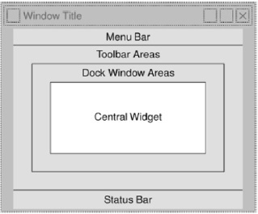

PyQt5
- QtCore − 其他模块使用的核心非 GUI 类
- QtGui − 图形用户界面组件
- QtMultimedia − 低级多媒体编程类
- QtNetwork − 网络编程类
- QtOpenGL − OpenGL 支持类
- QtScript − 评估 Qt 脚本的类
- QtSql − 使用 SQL 进行数据库集成的类
- QtSvg − 显示 SVG 文件内容的类
- QtWebKit − 渲染和编辑 HTML 的类
- QtXml − 处理 XML 的类
- QtWidgets − 创建经典桌面风格 UI 的类
- QtDesigner − 扩展 Qt Designer 的类
QWidget派生自 QObject 和 QPaintDevice 类的类是所有用户界面对象的基类。QDialog和QFrame类也派生自 QWidget 类。他们有自己的子类系统。
这是常用小部件的选择列表
| 序号 | 小部件和说明 |
|---|---|
| 1 | QLabel用于显示文本或图像 |
| 2 | QLineEdit允许用户输入一行文本 |
| 3 | QTextEdit允许用户输入多行文本 |
| 4 | QPushButton调用操作的命令按钮 |
| 5 | QRadioButton允许从多个选项中选择一个 |
| 6 | QCheckBox允许选择多个选项 |
| 7 | QSpinBox允许增加/减少整数值 |
| 8 | QScrollBar允许访问超出显示孔径的小部件内容 |
| 9 | QSlider允许线性改变边界值。 |
| 10 | QComboBox提供可供选择的项目的下拉列表 |
| 11 | QMenuBar包含 QMenu 对象的单杠 |
| 12 | QStatusBar通常在 QMainWindow 的底部，提供状态信息。 |
| 13 | QToolBar通常在 QMainWindow 顶部或浮动。包含操作按钮 |
| 14 | QListView在 ListMode 或 IconMode 中提供可选择的项目列表 |
| 15 | QPixmap显示在 QLabel 或 QPushButton 对象上的屏幕外图像表示 |
| 16 | QDialog可以向父窗口返回信息的模态或非模态窗口 |
一个典型的基于 GUI 的应用程序的顶层窗口是由QMainWindow小部件对象。上面列出的一些小部件在此主窗口中占据指定位置，而其他小部件则使用各种布局管理器放置在中央小部件区域。

QDialog 小部件呈现一个顶级窗口，主要用于收集用户的响应。 它可以配置为 Modal（它会阻止其父窗口）或 Modeless（可以绕过对话窗口）。
PyQt API 有许多预配置的 Dialog 小部件，例如 InputDialog、FileDialog、FontDialog 等。
QMessageBox 是一种常用的模式对话框，用于显示一些信息性消息，并可选择要求用户通过单击其上的任何一个标准按钮来做出响应。 每个标准按钮都有一个预定义的标题、一个角色并返回一个预定义的十六进制数字。
多文档界面
一个典型的 GUI 应用程序可能有多个窗口。 选项卡式和堆叠式小部件允许一次激活一个这样的窗口。 然而，很多时候这种方法可能没有用，因为其他窗口的视图被隐藏了。
同时显示多个窗口的一种方法是将它们创建为独立的窗口。 这称为 SDI （单文档接口）。 这需要更多的内存资源，因为每个窗口可能有自己的菜单系统、工具栏等。
MDI （多文档接口） 应用程序消耗较少的内存资源。 子窗口相对于彼此放置在主容器内。 容器小部件称为 QMdiArea。
QMdiArea 小部件一般占据 QMainWondow 对象的中心小部件。 该区域中的子窗口是 QMdiSubWindow 类的实例。 可以将任何 QWidget 设置为 subWindow 对象的内部小部件。 MDI 区域的子窗口可以层叠或平铺排列。
PyQt5 - 拖放
拖放的提供对用户来说非常直观。 它存在于许多 桌面应用程序中，用户可以在其中将对象从一个窗口复制或移动到另一个窗口。
基于 MIME 的拖放数据传输基于 QDrag 类。 QMimeData 对象将数据与其对应的 MIME 类型相关联。 它存储在剪贴板上，然后在拖放过程中使用。
下面的 QMimeData 类函数可以方便地检测和使用 MIME 类型。
数据库处理
PyQt5 库包含 QtSql 模块。 它是一个复杂的类系统，可以与许多基于 SQL 的数据库进行通信。 它的 QSqlDatabase 通过 Connection 对象提供访问。 以下是当前可用的 SQL 驱动程序列表
QGraphicsScene
Create a QGraphicsScene : This serves as the container for the graphical elements.
- 创建 QGraphicsScene：用作图形元素的容器。
Load the Image with QPixmap : Use
QPixmapto load the image.- Load the Image with QPixmap：用于 QPixmap 加载图像。
Add the Image to the Scene : Create a
QGraphicsPixmapItemfrom theQPixmapand add it to the scene.- 将图像添加到场景： QGraphicsPixmapItem 从 创建一个 QPixmap 并将其添加到场景中。
Display the Scene in a QGraphicsView : Use
QGraphicsViewto display the contents of the scene.- 在 QGraphicsView 中显示场景：用于 QGraphicsView 显示场景的内容。
A QRadioButton class object presents a selectable button with a text label. It is commonly used when the user need to choose one option from a list of options. This widget is represented by a small circular button that can be toggled on (checked) or off (unchecked). This class is derived from QAbstractButton class.
QRadioButton 类对象表示带有文本标签的可选按钮。当用户需要从选项列表中选择一个选项时，通常使用它。此小部件由一个小的圆形按钮表示，该按钮可以打开（选中）或关闭（取消选中）。此类派生自 QAbstractButton 类。